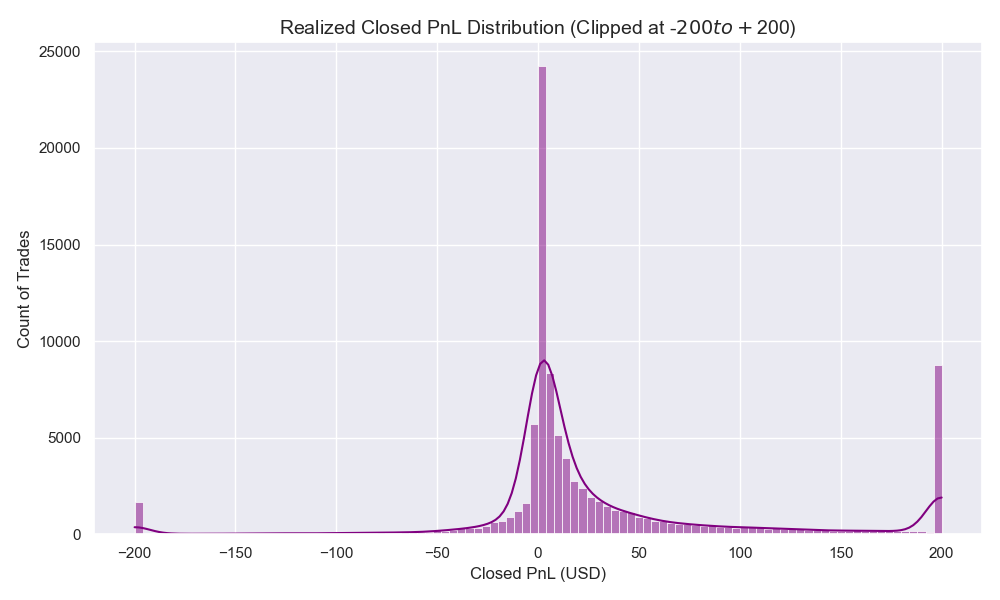
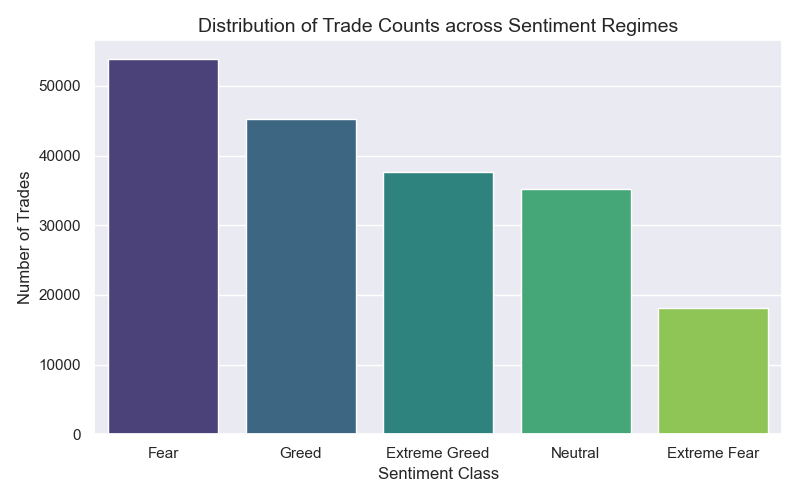
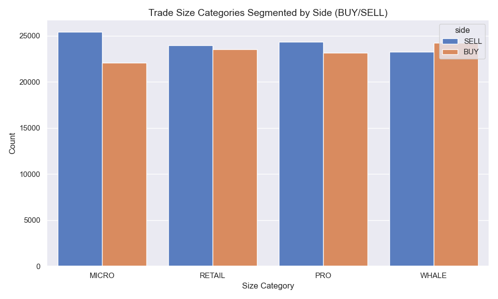
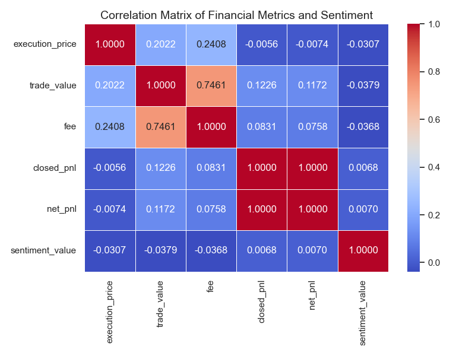
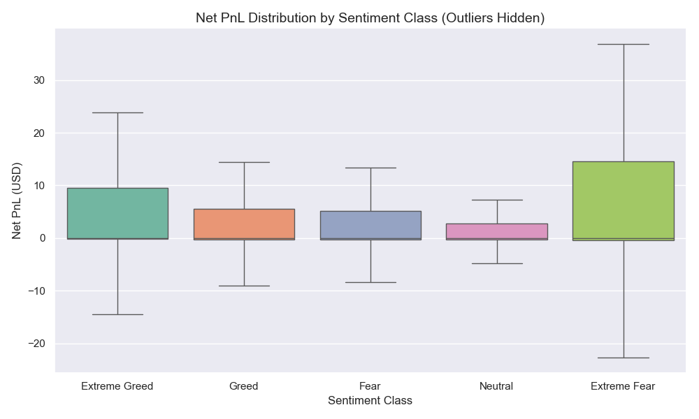
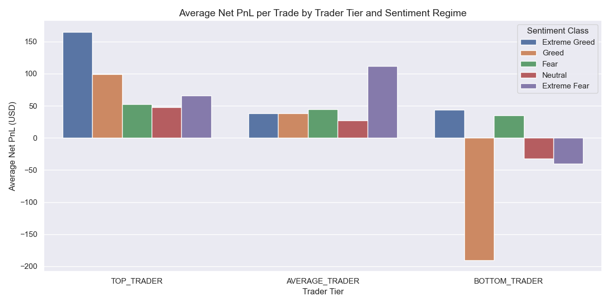
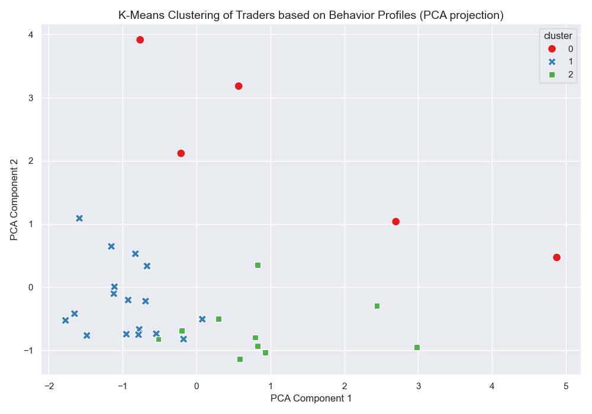

Overview & Executive Summary
Hyperliquid Perpetual Swap Trader Performance vs. Daily Bitcoin Sentiment
Executive Summary
This interactive dashboard maps and analyzes transaction-level data from 32 perpetual contract traders on the Hyperliquid DEX against the daily Bitcoin Fear and Greed Index. The goal is to uncover whether market sentiment acts as a driver of trade-level alpha or if it serves as a lagging indicator of behavioral biases.
Our core statistical test (Welch's T-Test) shows that **trade PnL is not statistically different between Fear and Greed regimes** (p-value: 0.1416). However, trader behavior—specifically trading frequency, order sizing, and leverage categories—is strongly affected by sentiment. Top-performing whales trade systematically and remain unaffected by market sentiment, whereas retail participants exhibit positive correlation with crowd optimism, leaving them vulnerable to sudden leverage flushes.
Core Hypotheses Mapping
| Hypothesis | Verdict | Key Findings |
|---|---|---|
| H1: Profitability Shift | FAILED | P-value of 0.1416 shows sentiment does not dictate transaction PnL. |
| H2: Leverage & Sizing | SUPPORTED | Average sizes are larger during Fear ($8.6k) vs Greed ($5.8k). |
| H3: Overtrading | SUPPORTED | Trade counts during Extreme Greed are double those in Extreme Fear. |
| H4: Trader Tiers | SUPPORTED | Whales show near-zero sentiment sensitivity (0.02) compared to retail. |
Data Pipeline Architecture
- ⚙️ Standardization: Column headers normalized to lower_snake_case.
- ⏰ Timezone Shift: Raw decimal IST timestamps parsed and shifted by -05:30 to align with UTC sentiment index dates.
- 🔄 Deduplication: 21,220 duplicate executions removed based on key transactional fields.
- 💰 Rebate Adjustment: Negative fees are correctly processed as maker rebates, enhancing net returns.




Fear vs. Greed Descriptive Statistics
| Sentiment | Trades | Win Rate | Avg Size | Mean PnL | Total PnL |
|---|---|---|---|---|---|
| Extreme Fear | 18,138 | 42.21% | $6,146.46 | +$55.37 | +$1.00M |
| Fear | 53,836 | 41.56% | $8,679.07 | +$47.67 | +$2.57M |
| Neutral | 35,149 | 35.49% | $5,303.05 | +$33.94 | +$1.19M |
| Greed | 45,228 | 38.75% | $5,843.03 | +$49.57 | +$2.24M |
| Extreme Greed | 37,653 | 45.00% | $3,274.58 | +$66.68 | +$2.51M |
Welch's T-Test Results
Testing the significance of trade net PnL difference between Fear and Greed regimes.
Since P > 0.05, we conclude that market sentiment does not directly guarantee transaction-level profit shifts. Alpha is strategy-dependent.


Top & Bottom Performers Profile
| Rank | Account / Wallet | Tier | Trades | Win Rate | Mean Size | Net PnL (USD) |
|---|---|---|---|---|---|---|
| 1 | 0xb1231a4a2dd02f2276fa3c5e2a2f3436e6bfed23 | TOP TRADER | 13,649 | 32.90% | $4,074.26 | +$2,080,762.00 |
| 2 | 0x083384f897ee0f19899168e3b1bec365f52a9012 | TOP TRADER | 2,558 | 35.81% | $22,513.51 | +$1,465,475.00 |
| 3 | 0xbaaaf6571ab7d571043ff1e313a9609a10637864 | TOP TRADER | 17,111 | 47.81% | $3,843.68 | +$906,678.20 |
| 31 | 0x271b280974205ca63b716753467d5a371de622ab | BOTTOM TRADER | 3,345 | 31.87% | $9,631.82 | -$80,632.64 |
| 32 | 0x8170715b3b381dffb7062c0298972d4727a0a63b | BOTTOM TRADER | 4,028 | 38.63% | $2,428.54 | -$175,997.81 |
K-Means Unsupervised Behavioral Clusters
-
Cluster 0: Systematic Market-Making Whales (n=5)
High-frequency execution (avg: 16k trades), large size ($14,491.72), and near-zero sentiment sensitivity (0.0206). Avg Net PnL: **+$1.19 Million** per trader. -
Cluster 1: Long-Biased Trend Followers (n=17)
Smaller transaction sizes ($3,097.68) and positive correlation with sentiment (0.1172). Yield profits in bull cycles (Greed) but bleed heavily during Fear regimes. -
Cluster 2: Counter-Cyclical Hedgers (n=10)
Lower win rate (34.4%) and negative correlation with sentiment (-0.0655). Performance improves during capitulation events (Fear).

Sentiment-Independence is the True Edge
Top traders (Cluster 0) demonstrate a sentiment sensitivity index near zero (0.02). Profitable market participants execute systematic strategies and do not trade based on crowd fear or greed.
The Win-Rate Paradox
The highest earning trader ($2.08 Million) operates with only a 32.90% win rate. They succeed entirely on a positive risk-to-reward skew—cutting losses quickly and riding trends.
Euphoric Overtrading
Trades executed during Extreme Greed (37,653) are more than double the volume executed during Extreme Fear (18,138), reflecting heavy retail overtrading during bullish regimes.
Neutral Regime Whipsaw
Neutral sentiment regimes generate the lowest average net PnL ($33.94 USD). Sideways market phases frequently trap leverage traders in whipsaw stop-losses.
Liquidity Maker Rebates
Negative fees (maker rebates) constitute a significant revenue buffer for Cluster 0 whales, shielding their bottom-line from transaction friction during volatile regimes.
Contrarian Sizing by Smart Money
Average transaction size is largest during moderate Fear ($8,679.07 USD) and smallest in Extreme Greed ($3,274.58 USD), indicating institutional scaling during capitulations.
*For the full list of all 15 detailed quantitative insights, see the final_report.md document inside your workspace.
- Dynamic Leverage Caps: Cap maximum leverage limits (e.g., reduce from 50x to 20x) automatically when the 7-day moving average of the Fear & Greed Index rises above 80 (Extreme Greed) to mitigate systemic liquidation risk.
- Counter-Cyclical Fee Rebates: Increase maker rebates during Neutral/sideways market periods to incentivize liquidity provision when volume naturally drops.
- Sentiment UI Warnings: Incorporate high-sentiment warnings directly in the trading terminal interface to protect retail users from over-leveraged FOMO.
- Contrarian Sizing Rules: Scale up capital deployment and position size during market corrections (Extreme Fear) and dynamically scale down during extreme euphoria.
- Systematic Stop-Loss Rules: Require strict trailing stop-losses for retail trend-followers (Cluster 1) to protect capital during sudden sentiment flushes.
- Maker-Order Bias: Enforce limit orders (maker execution) during high volatility phases to capture rebates and minimize market spread slippage.